MC Multi パック v1.3.1
入っているMOD（41個）
Minecraft 1.21.1 ／ NeoForge
パックをダウンロード（v1.3.1・97KB）CurseForge の My Modpacks → Import で読み込む
日本語化パック入り：初回だけ 設定 → リソースパック で「MC Multi 日本語化パック」を右へ移して完了
v1.3.0 を入れ済みの人は 日本語化パックだけ を resourcepacks フォルダへ
Twilight Forest黄昏の森
ずっと夕暮れの魔法の森。ボスを順番に倒して進む冒険MOD。このサーバーのメイン
黄昏の森をもっと楽しく
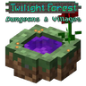
TF Dungeons & Villages
森に村と地下ダンジョンが増える
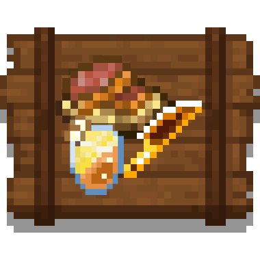
Twilight's Flavors & Delight
森の素材で料理が作れる
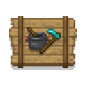
Farmer's Delight
畑と料理が増える。鍋・まな板・新しい作物
ほかのディメンション
ダンジョン・建物
When Dungeons Arise
巨大な城・塔・空飛ぶ船などのダンジョンが出てくる。中には強い敵とお宝
YUNG's シリーズ（8個）
地下ダンジョン・要塞・廃坑・砂漠とジャングルの神殿・海底神殿・ネザー要塞・エンドの島を、広くて探検しがいのある作りに変える
新しいダンジョンは、まだ誰も行っていない場所にだけ出るよ
村づくり
冒険を快適に
JEI
アイテムの作り方を検索できる
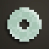
Jade
見ているブロックやモブの名前・体力を表示
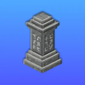
Waystones
ワープ石を置いた場所どうしを行き来できる
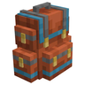
Sophisticated Backpacks
強化できるリュック。荷物が多くても安心
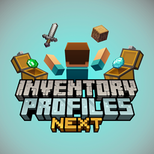
Inventory Profiles Next
チェストや持ち物をボタン1つで整頓。壊れた道具の自動持ち替えも
Xaero's Minimap
画面の端にミニマップ。土地を保護した範囲も地図に出る
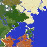
Xaero's World Map
M キーで大きい地図。行ったところが記録される
マルチ向け
Lootr
宝箱の中身が人ごとに出る。取り合いにならない
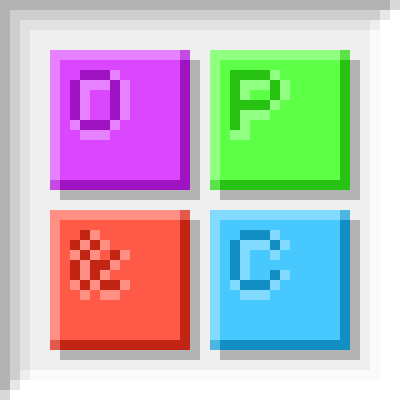
Open Parties and Claims
自分の土地を保護。パーティで共有もできる
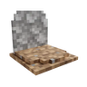
GraveStone Mod
死んだ場所にお墓ができて、アイテムが消えない
軽量化・そのほか
ModernFix
起動を速く、動作を軽くする
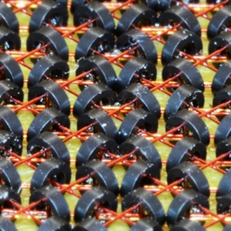
FerriteCore
メモリの使用量を減らす
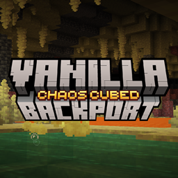
Vanilla Backport
前のワールドの新しいブロック（ペールオーク・銅のチェストなど）を使えるようにする
前提MOD：
mezz config（JEI用）／
Balm（Waystones用）／
Sophisticated Core（リュック用）／
owo-lib（Aether用）／
Platform（Vanilla Backport用）／
libIPN・Kotlin for Forge（整頓用）／
YUNG's API（YUNG's用）／
Structurize・BlockUI・Domum Ornamentum・Multi-Piston（MineColonies用）
黄昏の森への入り方
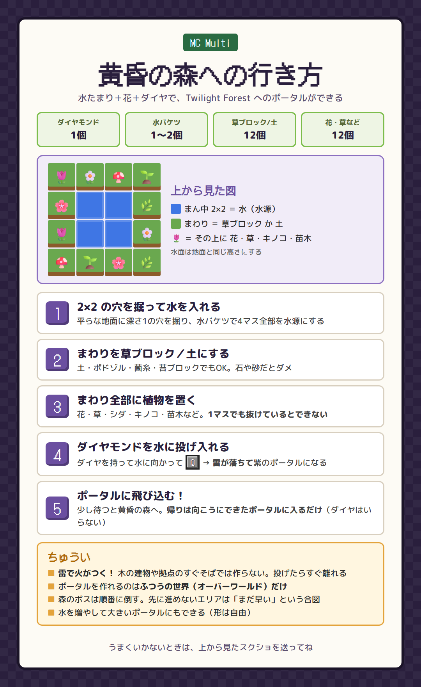
タップで大きく表示